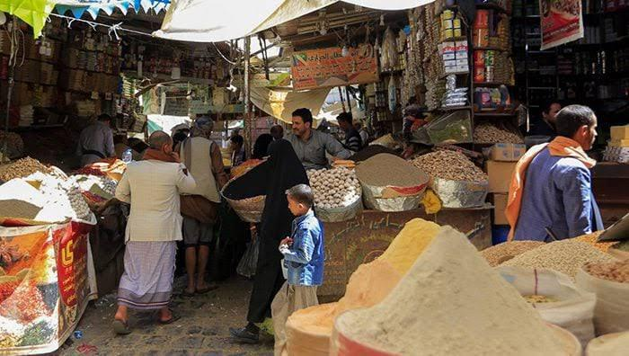

Welcome to Yemen: secondary 2.A

Discover the rich history, diverse landscapes, and current challenges of Yemen.
Discover the rich history, diverse landscapes, and current challenges of Yemen.
Yemen is located in the southern part of the Arabian peninsula bordered to the north by Saudi Arabia to the east by oman and to the west by the red sea Yemen is one of the neighboring countries that does not have rivers running through it Yemen also have famous island called Socotra known for its diverse biological environment In Yemen there is also a mountain called jabal AL-Nabi shuayb which is the highest mountain in Yemen IN Yemen you can find the alovera plant and the white corn And the least populated place in Yemen is saihout governorate In which the population there is less than 60'000 people while hadra mout is known as the biggest government there It is full of people where the number of people there is 1'028'556 by tayyam.

Yemen has a rich culture shaped by its Arab, Islamic, and local traditions, with colorful festivals, poetry, and music. Its architecture is unique, featuring tall mud- brick buildings with intricate designs. The old city of Sana'a, a UNESCO World Heritage Site, is famous for its multi-story houses with stained-glass windows and ornate patterns. Shibam, known as the "Manhattan of the Desert,' has impressive mud-brick skyscrapers. These structures show Yemen's creativity and its ability to blend tradition with the environment by Mohammed.

In late 2005, the World Bank (which extended Yemen a four-year US$2.3 billion economic support package in October 2002, together with other bilateral and multilateral lenders) announced that, as a consequence of Yemen's failure to implement significant reforms, the World Bank would reduce financial aid by one-third over the period July 2005 through July 2008. A key component of the $2.3 billion package — $300 million in concessional financing — has been withheld, pending the renewal of Yemen's PRGF with the IMF, which is currently under negotiation. However, in May 2006 the World Bank adopted an assistance strategy for Yemen, under which it will provide approximately $400 million in International Development Association (IDA) credits over the period FY 2006 to FY 2009. In November 2006, at a meeting of Yemen's development partners, a total of $4.7 billion in grants and concessional loans was pledged for the period 2007–10. At present, despite possessing significant oil and gas resources and a considerable amount of agriculturally productive land, Yemen remains one of the poorest of the world's low-income countries; more than 80 percent (2018) of the population lives in poverty.[21] The influx of an average 1,000 Somali refugees per month into Yemen looking for work is an added drain on the economy, which already must cope with a 20 to 40 percent rate of unemployment. Yemen remains under significant pressure to implement economic reforms, lest it face the loss of badly needed international financial support.
After nine years of conflict, the national socioeconomic systems of Yemen remain on the edge of total collapse, while conflict, large-scale displacement and recurring climate shocks have left families vulnerable to communicable diseases outbreaks. Millions of children lack access to safe water, sanitation and hygiene services, and the country continues to experience regular outbreaks of cholera, measles, diphtheria and other vaccine-preventable diseases. While the reduction in active conflict observed since April 2022 has led to a decrease in civilian casualties and distress across communities, the situation remains fragile without a sustainable political settlement. Search form Toggle navigation Search form Appeal Yemen crisis Yemen is one of the world’s largest humanitarian crises – and children are being robbed of their futures. Yemen. A child is cradled in her mother's arms as she undergoes the required screenings and vaccinations at a mobile clinic team building project in Hajjah, Yemen. UNICEF/UNI428897/UNICEF/YPN Available in: English العربية Yemen continues to face multiple crises, including ongoing conflict, economic insecurity, widespread malnutrition, a fragile healthcare system, and recurrent disease outbreaks, all of which compound one of the largest humanitarian crises in the world. What’s happening? | Crisis snapshot | Impact on children How we’re responding | Recent news and features | UNICEF results | Situation updates Support UNICEF’s work for children What’s happening in Yemen? After nine years of conflict, the national socioeconomic systems of Yemen remain on the edge of total collapse, while conflict, large-scale displacement and recurring climate shocks have left families vulnerable to communicable diseases outbreaks. Millions of children lack access to safe water, sanitation and hygiene services, and the country continues to experience regular outbreaks of cholera, measles, diphtheria and other vaccine-preventable diseases. While the reduction in active conflict observed since April 2022 has led to a decrease in civilian casualties and distress across communities, the situation remains fragile without a sustainable political settlement. Yemen crisis snapshot How is the crisis affecting children? Thousands of children have been killed or maimed since the beginning of the conflict, and thousands more have been recruited into the fighting. Years of conflict, misery and grief have left millions of people in Yemen in need of mental health and psychosocial services. The ongoing humanitarian crisis has increased the vulnerability of children and women to exploitation, violence and abuse, child labour, killing and maiming, recruitment and use of children by parties to the conflict as combatants and in various support roles, domestic and gender-based violence, child marriage and psychosocial distress. The conflict has exacerbated the ongoing malnutrition crisis in Yemen. Around 2.7 million children are suffering from acute malnutrition, including hundreds of thousands of children suffering from severe acute malnutrition – a life-threatening condition if not treated urgently. The damage and closure of schools and hospitals has also disrupted access to education and health services. More than 4.5 million children of school age do not attend schools, and those who go to school are forced to cope with overcrowded classrooms and overburdened and unequipped teachers.
Yemeni cuisine is rich and diverse, known for its use of spices, fresh ingredients, and unique flavors. Popular dishes include Mandi, Fahsa, and Saltah, often enjoyed with traditional flatbreads like Malawah.